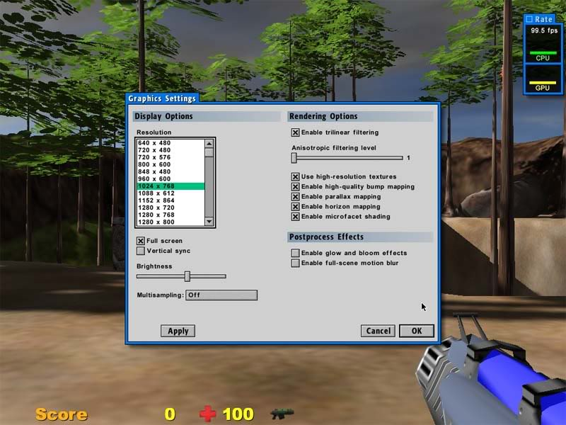

Frank Skilton wrote:Now here's what's baking my noodle. If I use the first lot of binaries I downloaded for 132 I see the same higher framerate as I do in 131.
Ghost in the machine...
 by billyrose » 16 Feb 2007, 00:35
by billyrose » 16 Feb 2007, 00:35
Frank Skilton wrote:Now here's what's baking my noodle. If I use the first lot of binaries I downloaded for 132 I see the same higher framerate as I do in 131.

 by Eric Lengyel » 16 Feb 2007, 00:43
by Eric Lengyel » 16 Feb 2007, 00:43

 by Frank Skilton » 16 Feb 2007, 00:56
by Frank Skilton » 16 Feb 2007, 00:56
 by Frank Skilton » 16 Feb 2007, 01:09
by Frank Skilton » 16 Feb 2007, 01:09
 by Eric Lengyel » 16 Feb 2007, 01:09
by Eric Lengyel » 16 Feb 2007, 01:09
 by yuzairee » 16 Feb 2007, 06:59
by yuzairee » 16 Feb 2007, 06:59

 by arthurdent » 16 Feb 2007, 13:53
by arthurdent » 16 Feb 2007, 13:53
 by Frank Skilton » 16 Feb 2007, 19:24
by Frank Skilton » 16 Feb 2007, 19:24
arthurdent wrote:Frank,
From what I've read, on windows at least (should be same for mac) full-screen mode should always be quite a bit faster than windowed mode.

 by yuzairee » 16 Feb 2007, 22:27
by yuzairee » 16 Feb 2007, 22:27
Frank Skilton wrote:
- If I start C4 in full screen mode fps is around 50. If I then switch to windowed mode fps jumps up to around 100. Upon returning back to full screen mode frame rate stays at 100.
- If I start C4 in windowed mode fps is around 50. If I then switch to full screen mode fps jumps up to around 100.
I ran fraps and it was reporting the same fps as C4.
Can anyone else reproduce this behaviour?
 by billyrose » 17 Feb 2007, 01:37
by billyrose » 17 Feb 2007, 01:37
sammy wrote:Hi all,
For those with 80-90fps, what are their settings?
eg. screen resolution, using any special effects?
 by jwatte » 18 Feb 2007, 00:05
by jwatte » 18 Feb 2007, 00:05

 by Eric Lengyel » 18 Feb 2007, 05:22
by Eric Lengyel » 18 Feb 2007, 05:22
yuzairee wrote:Eric,
Any chance that you will include the source for the animated character in the next sub-release, or at least the .dae files?
 by yuzairee » 18 Feb 2007, 06:11
by yuzairee » 18 Feb 2007, 06:11
Eric Lengyel wrote:yuzairee wrote:Eric,
Any chance that you will include the source for the animated character in the next sub-release, or at least the .dae files?
The soldier or the pumpkinhead?
 by Eric Lengyel » 18 Feb 2007, 15:08
by Eric Lengyel » 18 Feb 2007, 15:08
 by jwatte » 18 Feb 2007, 21:00
by jwatte » 18 Feb 2007, 21:00
files for the soldier don't exist any more
 by Gauntlet » 20 Feb 2007, 11:57
by Gauntlet » 20 Feb 2007, 11:57
 by Optime » 20 Feb 2007, 12:14
by Optime » 20 Feb 2007, 12:14
Gauntlet wrote:Eric,
Why has the "Visibility" panel a own Hide/Show collection of icons and not just one list with locked buttons, like the "Selection Mask" panel has?
 by Eric Lengyel » 20 Feb 2007, 12:49
by Eric Lengyel » 20 Feb 2007, 12:49
Gauntlet wrote:Another Q: Will the API provide support for custom panels?
 by yuzairee » 21 Feb 2007, 11:35
by yuzairee » 21 Feb 2007, 11:35
Eric Lengyel wrote:Yes, that's one of the main design goals for the "pages". A plugin can add new pages and put whatever kinds of controls it wants there.
Users browsing this forum: No registered users and 1 guest
| Company | Contact | Privacy Policy | Site Map | Copyright © 2001–2015 Terathon Software LLC |  |